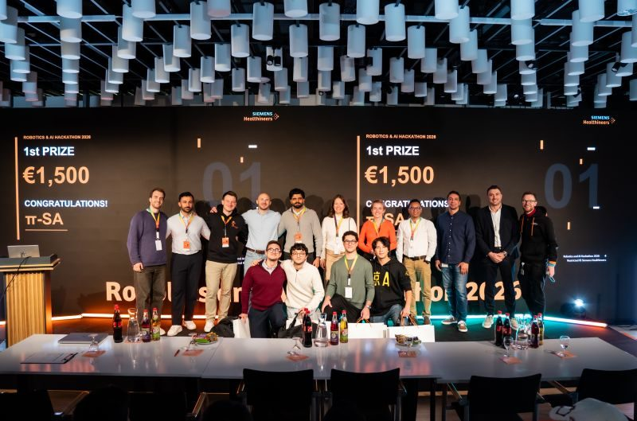
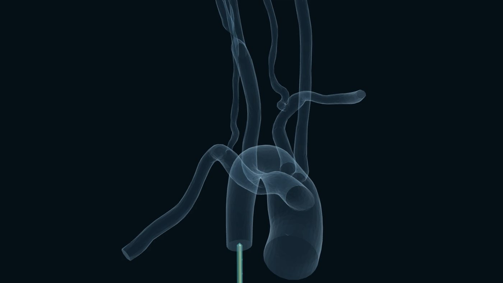
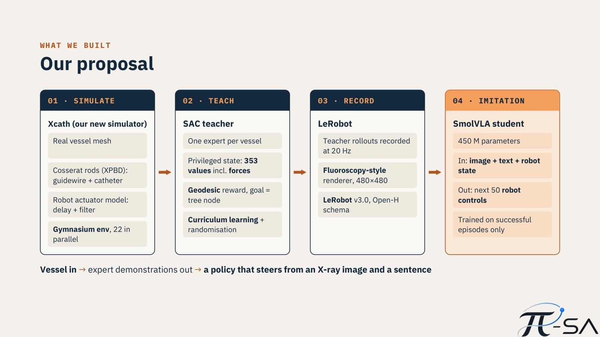
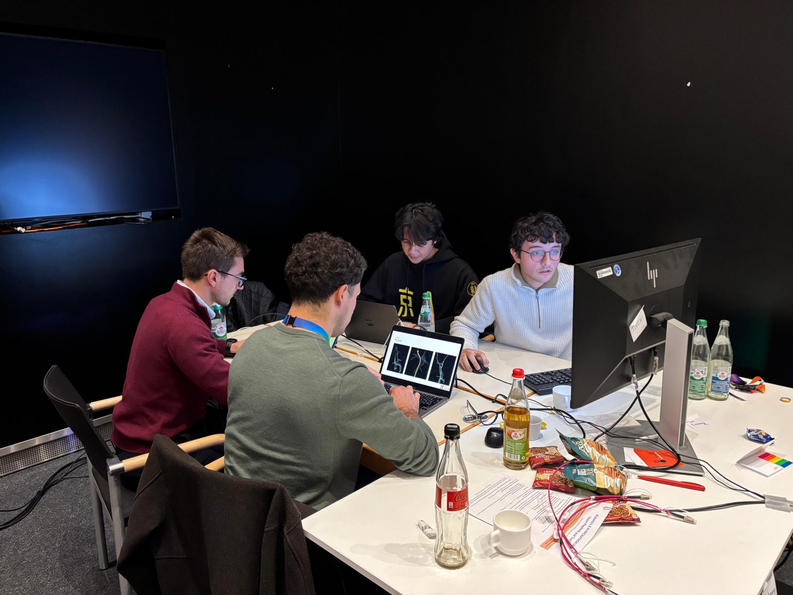
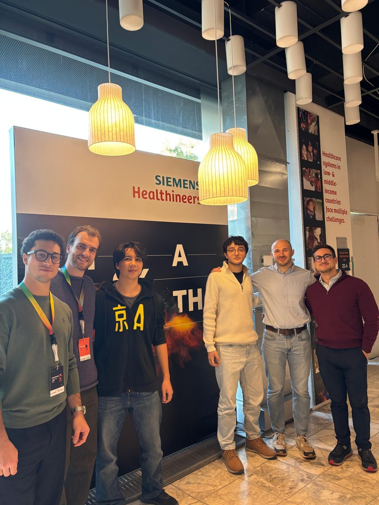

The problem
In endovascular procedures, such as thrombectomy for ischaemic stroke, a thin and flexible guidewire and catheter are pushed and rotated from outside the body through a branching vessel tree, while the clinician sees only a 2D X-ray image. Challenge 3 asked teams to make this navigation fully autonomous. The main bottleneck for learning it is data: expert procedures cannot be recorded by hand in sufficient numbers.

Approach
We started from the HCMR-EV stack provided for the challenge, which already included a simulator, an online Soft Actor-Critic (SAC) agent and imitation-learning scripts. Because it was designed for deployment, its reinforcement learning ran in real time at 5 Hz with noisy inputs only. Our key idea was to treat the reinforcement-learning policy not as the product but as a teacher: a teacher only has to produce good demonstrations, so it may use privileged information that no real sensor provides.

- Simulate. Xcath, a headless Python simulator: guidewire and catheter as Cosserat rods solved with XPBD, wall contact and friction, and a model of the robot actuators (delay and filter). Validated against the original JavaScript simulator, it runs 22 environments in parallel on one machine — 44 hours of simulation in 8 hours.
- Teach. One SAC expert per vessel (0.7 M parameters) with a privileged observation of 353 values, including every force acting on both devices, trained with curriculum learning and randomisation.
- Record. Teacher rollouts recorded at 20 Hz and rendered as 480×480 fluoroscopy-style frames into a LeRobot v3.0 dataset, with the robot state, commands, a text instruction and the episode outcome.
- Imitate. SmolVLA (450 M parameters), a vision-language-action model trained on successful episodes only. It sees only what an operator sees — image, text instruction and robot state — and predicts the next 50 robot commands.
The team
π-SA brought together robotics, computer science and bionics engineering: Alberto Anelli, Giuseppe Cairone, Alessio Naldoni and Riccardo Panizzolo. We are grateful to the challenge owners Matteo Pantano and Leon Wildt, and to the mentors and organisers at Siemens Healthineers, FAU and EELISA.


Simulation videos
Videos from the simulator. The first shows an extension of the simulator with a therapeutic device: a stent deployed after the target has been reached. The others show navigation episodes in Xcath.